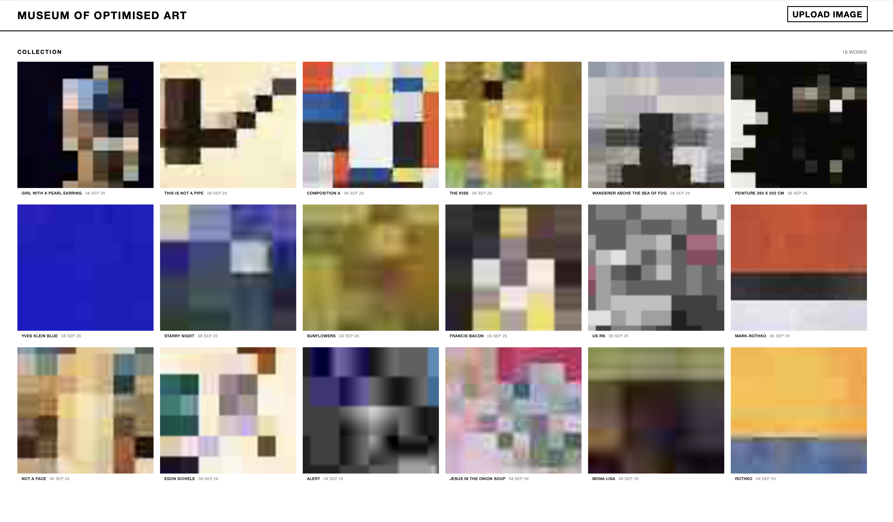

Mid Terms
Jaan Van Rompaey
Overview:
- Museum of Optimised Art
- Wolfinator 3000
- P5.js Experiments
- Open Tabs
- The Hearth (W.I.P.)
- My Voice within Others (W.I.P.)
- The Stage behind The Stage (W.I.P.)
Museum of Optimised Art

A website optimising the image file of an artwork to critique the optimisation of our society and culture.
Wolfinator 3000
Putting on a mask transforms you into a werewolf...
P5.js Experiments

From patterns to 3D dices to letters from World War One.
Open Tabs

Creating a Python code to collect our browsing history

Visualising the database into a time-based grid
Creating a detective-like card game to make people dream about the stories behind the data
My Voice within Others (Work In Progress)
A video about growing up and getting more distanced from your childhood innocense
The Hearth (Work In Progress)

Group Research
The Stage behind The Stage (Work In Progress)

Research

Try-out